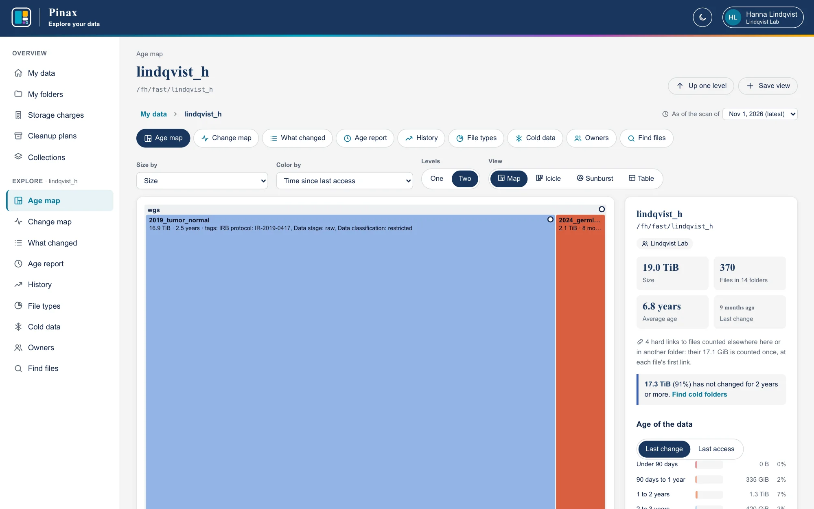
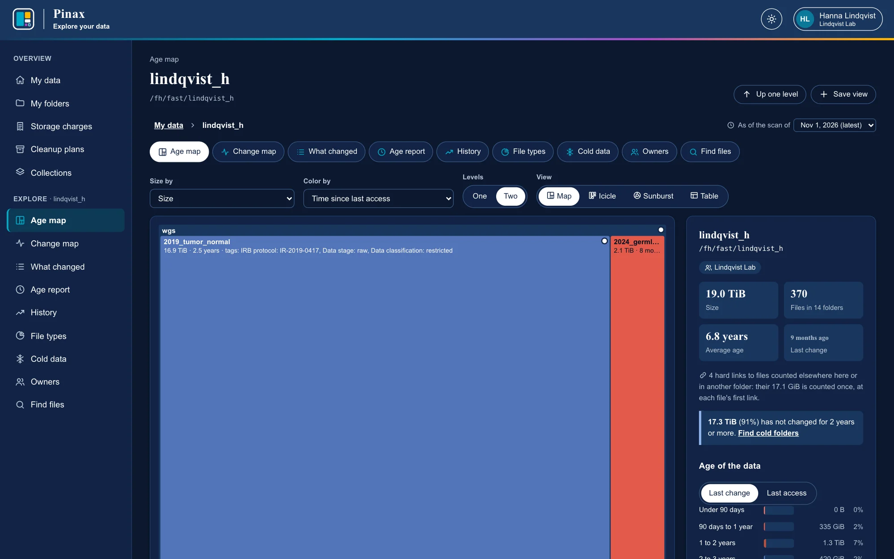
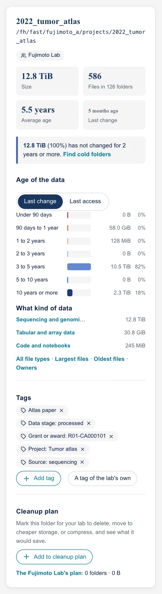
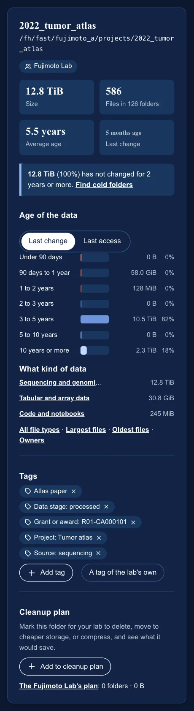
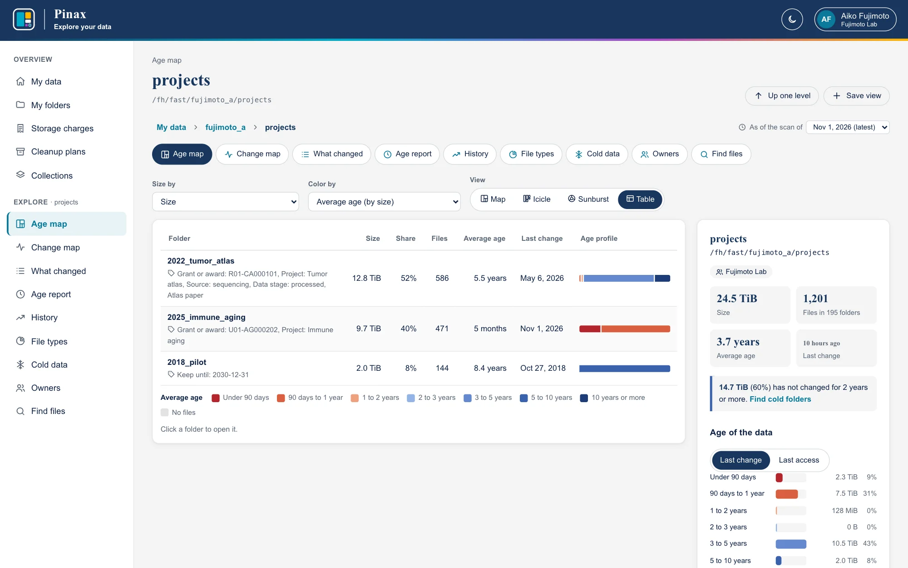
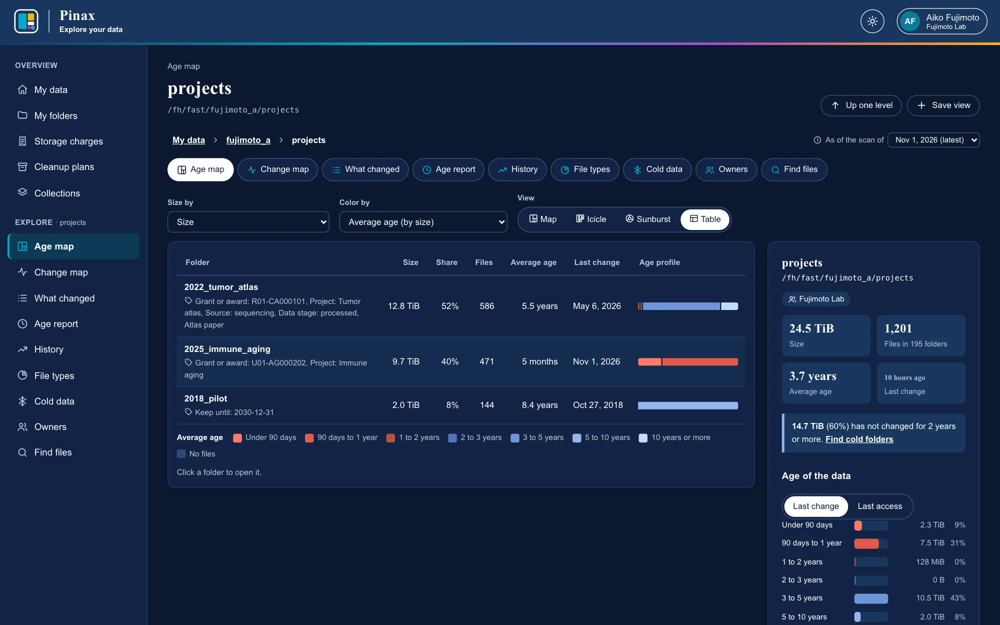
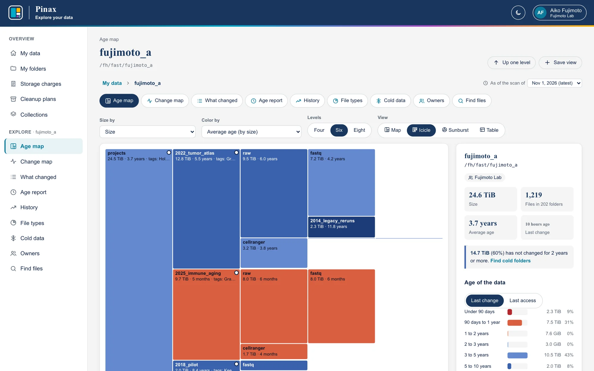
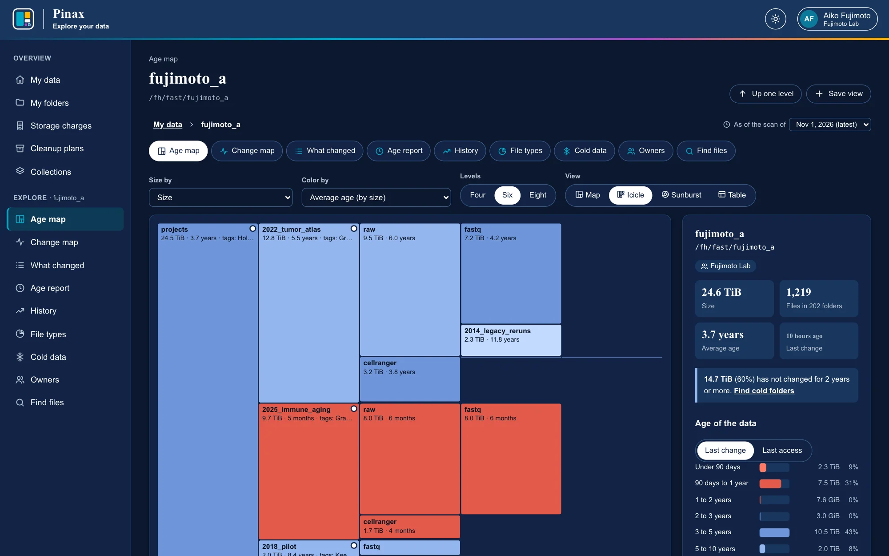
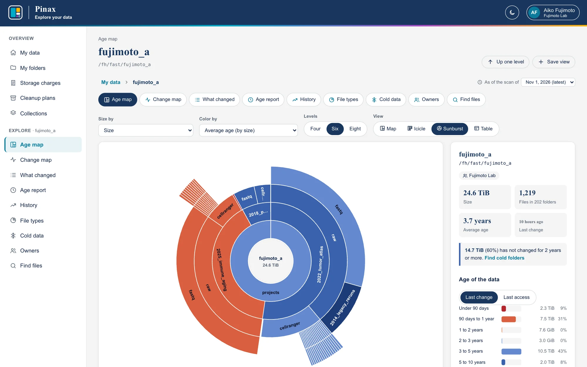
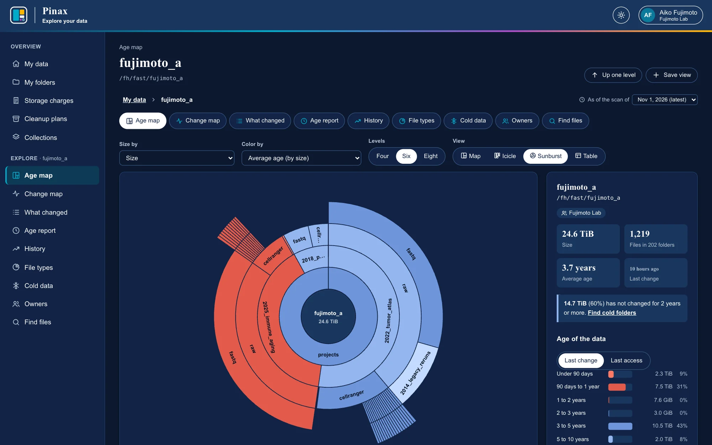

The age map
A treemap of any folder, sized by what it holds and colored by how old it is.
The age map is a treemap of a folder's subfolders: each tile's area is how much it holds, and its color how old its data is, from red (changed recently) through orange to blue (unchanged for years). A large dark blue tile is a lot of data nobody has touched in a long time. Click a tile to go into it; Up one level and the path above go back.


The controls above it:
- Size by: tiles sized by Size (the files' size), Space on disk, Number of files, data of one kind (such as Sequencing and genomics), or data older than a threshold. A folder with none of it has no area, so it is not drawn, and the line under the map says how many folders hold it.
- Color by: Average age (by size), Time since the last change, Age of the oldest file, Time since the last access (where the filesystem records it), Share that is cold, or the share of one kind of data.
- Levels: one level of subfolders, or two, with each tile's own subfolders drawn inside it. For the icicle and the sunburst: four, six, or eight levels. The map draws up to 60 subfolders of a folder, and with two levels up to 12 inside each tile; the rest go into one tile (5 smaller folders), and the line under the map says how many.
- View: the map; the same folders several levels deep as an icicle or a sunburst; or the folder's subfolders as a table, which can be sorted and read by a screen reader.
Hover a tile for its size, files, ages, and owner. A tile with a dot is tagged, or holds tagged folders (Tags).




The panel beside the map is about the folder you are in: its size, files and folders, average age, last change, how much is cold (with a link to its cold folders), its data by age (by last change or last access), what kind of data it is, its owner, its tags, and its place in your lab's cleanup plan. Where a folder could not be read completely (the scanner lacked permission somewhere below it), the panel says so, and its totals are lower bounds. Where it holds hard links to files counted elsewhere, it says how much they would have counted again.




Icicle and sunburst
The map shows one or two levels of folders at a time, so data deep in a chain of folders (runs inside samples inside batches) is found by clicking down. The icicle and the sunburst show a folder four, six, or eight levels deep at once (Levels). Each folder is drawn beside the folder it is in, as long as its share of it, and colored as on the map. The two views draw the same folders in different ways:
- Icicle: one column per level, left to right. A folder's height is how much it holds, so sizes are easy to compare and names have room.
- Sunburst: one ring per level around the folder you are in, clockwise from the top. A folder's angle is how much it holds. Outer rings are drawn larger, so compare angles, not areas; read exact sizes from the icicle. Click the middle to go up one level.
Folders holding less than 0.25% of the folder you are in are left out, so that the view stays readable. The space after a folder's subfolders is its own files, and the folders too small to draw. Size by and Color by work as they do for the map. Hover a folder for its details, and click it to go into it. The keyboard's Tab key moves through the first level; the table view lists the folder's subfolders for a screen reader.



